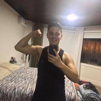

Blog
Contatos
@marcosstinglin
Marcos Vinicius Stinglin
Trabalho como designer tenho 18 anos e moro na cidade de Joinville SC, tenho a vontdade de realizar todos os meus sonhos
Posts Recentes
25/02/2022
Meu último trabalho de fevereiro
18/02/2022
Trabalho realizado para a cliente Fernanda
10/02/2022